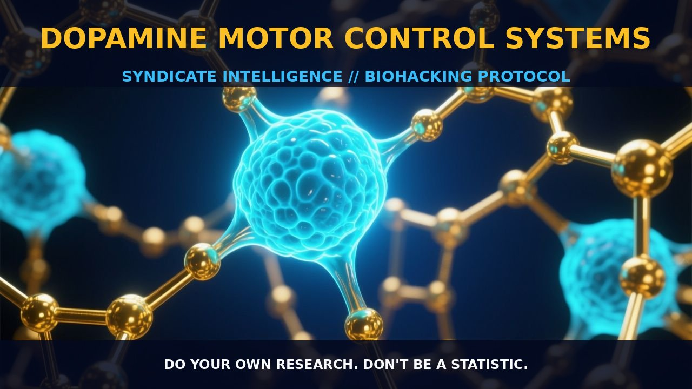

Optimizing Motor Control with Dopamine

1. The Mechanism
Dopamine, a neurotransmitter of the catecholamine and phenethylamine families, plays a pivotal role in motor control systems. Synthesized from tyrosine and DOPA, dopamine operates through various dopamine receptors, primarily D1 and D2 receptors, which are crucial for motor function. These receptors are distributed throughout the brain, particularly in the basal ganglia, a region involved in the regulation of motor control.
Dopamine dysregulation, characterized by either excess or deficiency, can lead to motor disorders such as Parkinson’s disease, where the dopamine-producing neurons in the substantia nigra degenerate, leading to a reduction in dopamine levels. This deficiency disrupts the delicate balance of the basal ganglia, resulting in the hallmark symptoms of Parkinson’s disease, including tremors, rigidity, and bradykinesia.
On the other hand, excessive dopamine activity can contribute to motor dysfunctions seen in conditions such as tardive dyskinesia, where prolonged use of dopamine-blocking drugs can lead to involuntary movements. The dopaminergic system is also intricately linked with other neurotransmitters, such as acetylcholine and GABA, creating a complex network that modulates motor control. This network ensures that motor commands are accurately executed and fine-tuned, maintaining the fluidity and precision of movement.
The dopaminergic system in the motor control system operates through a series of intricate signaling pathways. Dopamine acts as a neuromodulator, influencing the activity of neurons and synapses in the basal ganglia and motor cortex. Dopamine D1 receptors are primarily located in the direct pathway of the basal ganglia, which promotes movement, while D2 receptors are predominantly found in the indirect pathway, which inhibits movement. This dual pathway allows for precise regulation of motor commands, ensuring that actions are initiated and maintained with appropriate vigor and timing.
Additionally, dopamine interacts with other neurotransmitters such as glutamate and GABA, further modulating motor functions. The dynamic interplay between these neurotransmitters ensures that motor control is finely tuned, enabling individuals to perform complex motor tasks with ease and precision.
2. Bioslavery
The dopaminergic system provides a critical biological leverage point for enhancing motor control. By modulating the activity of dopamine receptors, biohackers can influence the motor performance and precision of their actions. For instance, increasing dopamine levels through supplementation or pharmacological means can enhance motor performance, particularly in tasks requiring rapid and precise movements.
Dopamine agonists, such as pramipexole and ropinirole, can be used to stimulate D2 receptors and thereby enhance motor coordination and speed. These compounds work by mimicking the action of dopamine, binding to D2 receptors and promoting the activation of the direct pathway of the basal ganglia, which enhances motor output. On the other hand, reducing dopamine activity through antagonists like haloperidol can be useful in conditions where excessive motor activity is a concern, such as in chorea or dystonia.
By balancing the activity of D1 and D2 receptors, biohackers can optimize motor control, ensuring that movements are both efficient and accurate. Moreover, the dopaminergic system can be leveraged to improve motor learning and adaptation. Dopamine is crucial for the reinforcement of motor behaviors and the consolidation of motor memories. By enhancing dopamine signaling, biohackers can facilitate the acquisition and retention of motor skills, such as those required for sports, musical performance, or other skilled activities.
This is particularly relevant in the context of working memory, where dopamine plays a critical role in maintaining the focus and attention necessary for learning and executing complex motor tasks. By optimizing dopamine levels, individuals can enhance their ability to learn new motor skills and adapt to changing conditions, thereby improving overall motor performance.
3. Tactical Implementation
To optimize motor control through dopaminergic modulation, biohackers can employ a variety of strategies. For example, supplementation with L-DOPA, the immediate precursor to dopamine, can be used to increase dopamine levels in the brain. L-DOPA is typically converted to dopamine in the brain, providing a sustained boost in dopaminergic activity. Dosage ranges can vary widely, but it is generally recommended to start with low-to-moderate amounts, around 100-200 mg, and adjust based on individual response. Timing is also crucial, as taking L-DOPA on an empty stomach can enhance absorption.
Additionally, stacking L-DOPA with carbidopa, an inhibitor of the peripheral metabolism of L-DOPA, can increase its effectiveness and reduce side effects. Another approach is to use dopamine agonists, such as pramipexole or ropinirole, which directly stimulate dopamine receptors. These compounds can be particularly useful for individuals seeking a more targeted modulation of dopaminergic activity. Dosages for these agonists typically range from 0.25 mg to 4 mg per day, depending on the individual’s response and tolerance. Timing of administration should be consistent to maintain a steady level of dopamine throughout the day.
Biohackers should also consider stacking these agonists with other compounds that support dopamine synthesis, such as tyrosine or L-theanine, to enhance the overall dopaminergic effect. In practical application, biohackers should monitor their response closely, paying attention to changes in motor performance, mood, and cognitive function. Adjusting dosages incrementally can help in finding the optimal balance that maximizes motor control without inducing dysregulation.
Engaging in regular working memory exercises can further enhance the effectiveness of dopaminergic modulation by increasing the number of dopamine receptors in the prefrontal cortex and temporal lobe. This dual approach of pharmacological enhancement and cognitive training can provide a robust foundation for optimizing motor control and performance.
Prostar Life Hack
To optimize motor control, supplement with L-DOPA and carbidopa for a sustained boost in dopamine levels. Use dopamine agonists like pramipexole or ropinirole for targeted modulation, and stack with tyrosine or L-theanine for enhanced effectiveness.
[ AUTHOR: LEAD TECHNICAL RESEARCHER ]